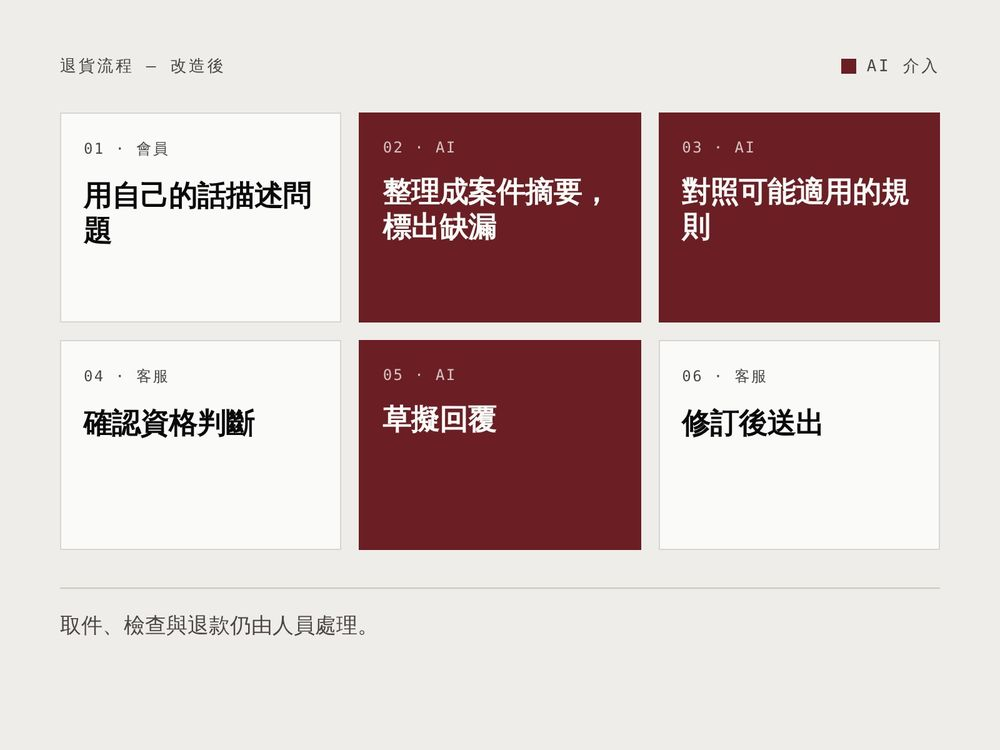
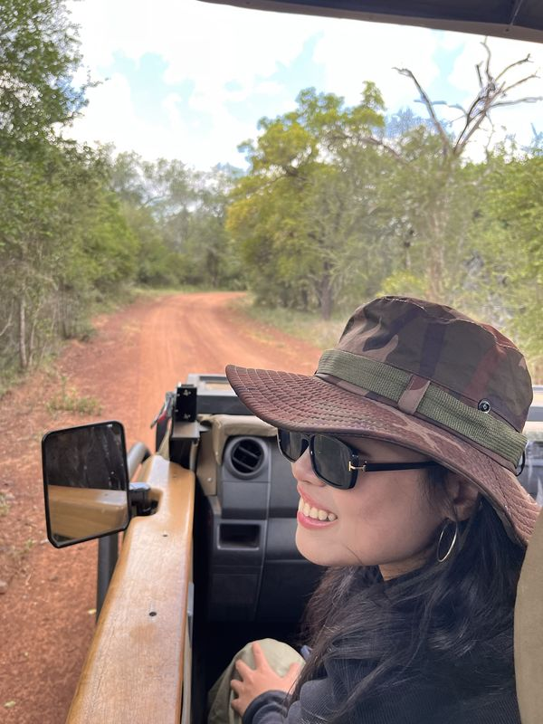
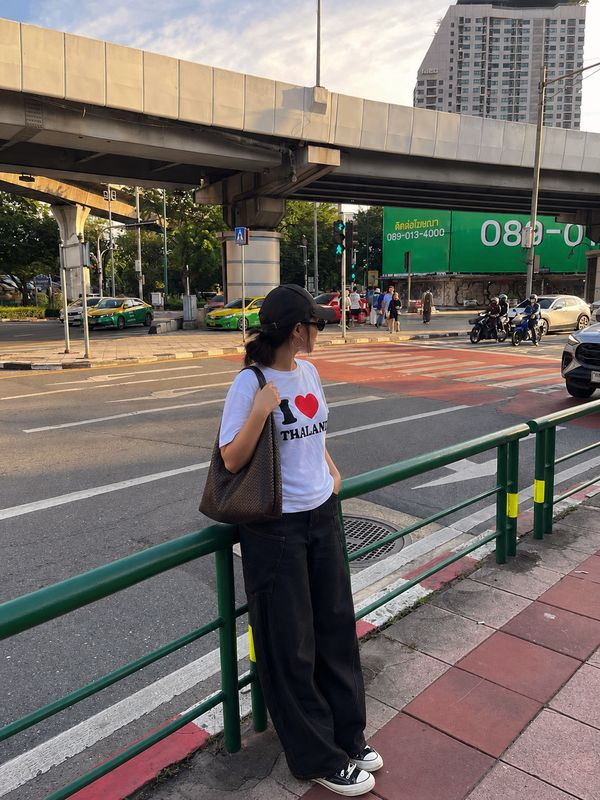
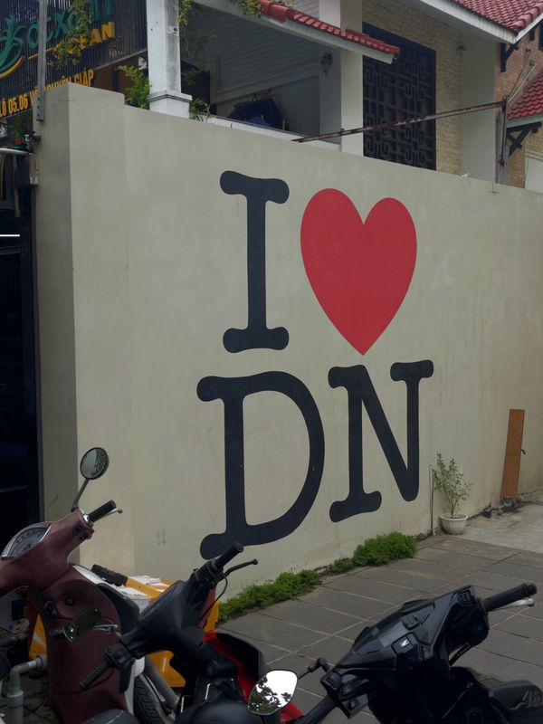
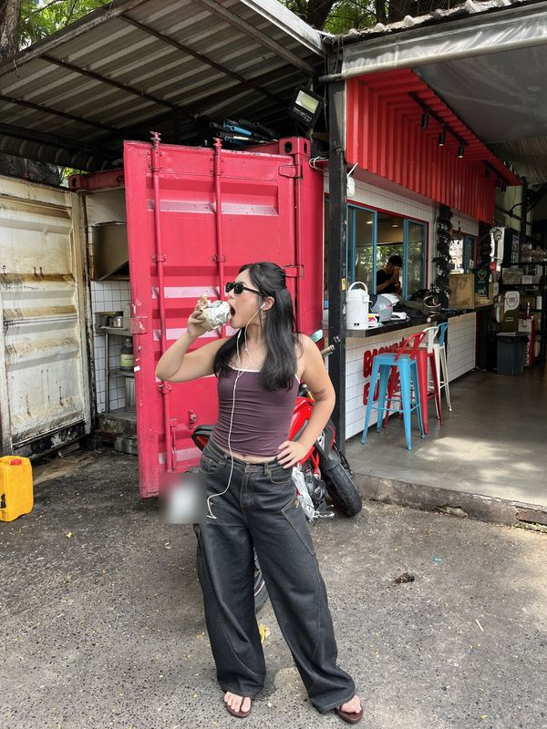
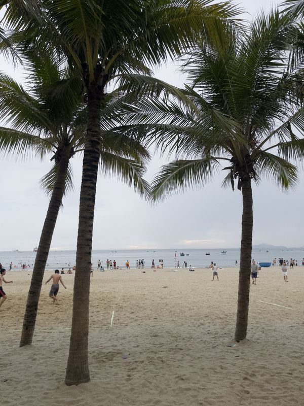
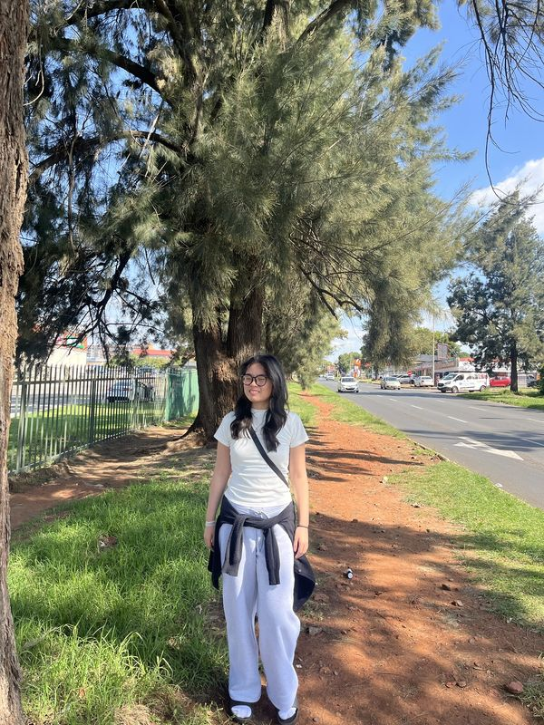
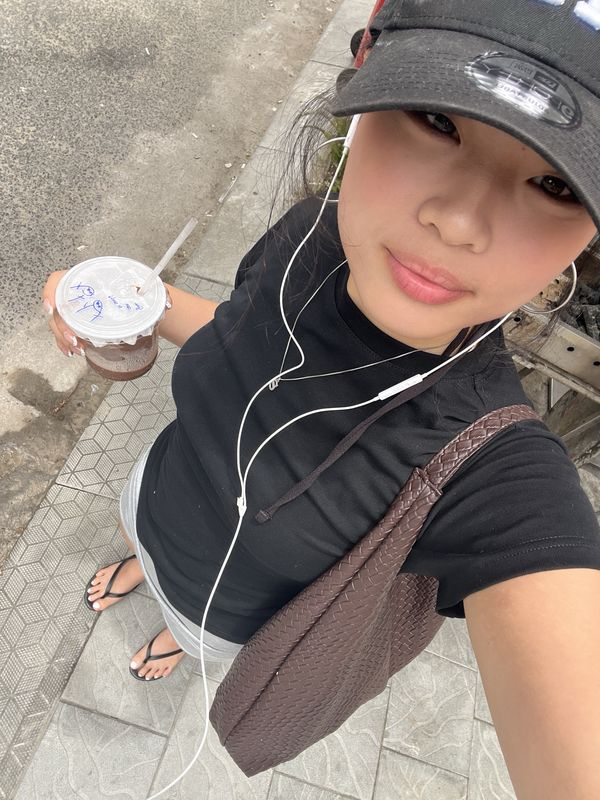

開放遠端工作
台灣台中 · UTC+8
01
精選作品
真問題，真解法。
Sompisi Transport
旅客找不到、也不敢信的家族接送服務——現在找得到、看得懂，手機點一點就能用 WhatsApp 預約。
TripTally
出國分帳遇到好幾種幣別就頭痛？它全包：每日預算、即時匯率，沒網路也能用。

好市多線上退貨 AI 流程改造
把亂糟糟的退貨來信變成清楚的案件，還拿 Claude、Gemini、ChatGPT 實測過。
02
關於
嗨，我是 Selina 👋.
資管畢業，現在在念碩士。寫 code 之前我會先問：到底誰在用？他們卡在哪？寫程式放最後——老實說，那是最簡單的部分。
座標
台灣台中
語言
中文 · English
尋找
遠端全端職缺
4年資管訓練
3年程式助教
12+個後台模組
2個上線網站
去過的地方 → 下一個要去的地方







知識庫
- 01衝刺時全力投入，平常重視平衡死線模式一開就衝到上線；做完就真的下班。
- 02上線的成就感最上頭把東西從零做到上線那一刻，真的很爽。
- 03細節控小地方會再三確認，不讓使用者踩雷。
- 04永遠在計畫下一趟旅行新地方讓我保持好奇，跨時區合作也很習慣。
- 05工作 ≠ 辦公桌成果比座位重要，有 Wi-Fi 就能交付。
會什麼不是重點。有 AI，什麼都學得會——重點是想學的心，和把事情負責到底。
前端
HTML / CSSJavaScriptVue.jsNuxtTypeScriptTailwindPWA
後端
PHPMySQLJavaC#SQL ServerREST APIsNode.jsFirebase
AI
AI 輔助開發LLM 提示詞設計與評估Python
工具
GitFigma
主力 熟悉
全遠端一台筆電＋穩定 Wi-Fi＝辦公室。
Work–life balance該拚就拚，下班就真的下班。
旅行邊看世界，邊做酷東西。
03
經歷
工作經歷
2026 — 現在
資訊管理碩士
靜宜大學
研究所 AI 課——正在讓 LLM 去改造真實流程。
2026 — 現在
網站維護
在地非營利組織
先用 Nuxt 做好，再照他們的需求搬到 Google Sites，現在持續維護。
2025 — 2026
軟體開發實習生
豐聯資訊 Info-Link Services
前端：用 Nuxt + TS 做出 12+ 個後台模組。後端：C# API＋SQL Server。兩邊都做。
2023 — 2026
程式設計助教
靜宜大學
教大一 Java 和演算法（大家都平安存活）。
2024 — 2025
英文助理教師
Galaxy English School
在這裡練成把難的事講簡單。
04
聯絡
一起做點什麼吧.
在找遠端全端人才？直接敲我，一天內回。